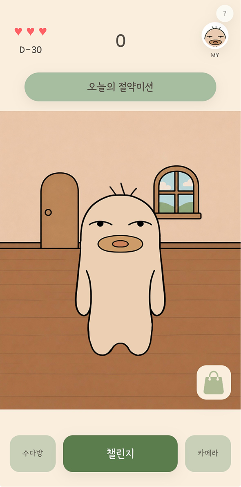
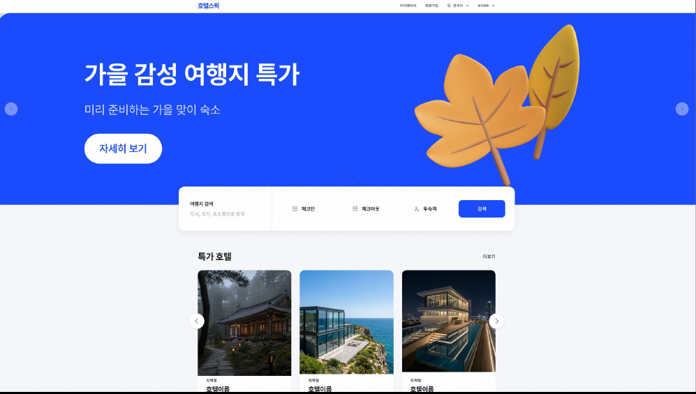

자린고비 · TEAM PROJECT Content Design
TEAM PROJECT

WHY JARINGOBI
“아껴야 한다”보다
“계속 하고 싶다.”
절약을 해야 하는 일이 아닌,
계속 참여하고 싶은 습관 경험으로.
20대에게 현실적인 재테크는 소비를 줄이는 습관이라고 보았습니다. 하지만 기록만으로는 그 습관을 오래 이어가기 어렵다고 판단했습니다.
그래서 절약 챌린지가 캐릭터 성장과 보상으로 이어지고, 커뮤니티에서 함께 참여하는 경험을 기획했습니다.
- 현실적인 절약 습관
- 행동이 이어지는 보상
- 함께하는 참여 경험
DESIGN DIRECTION
모바일 중심의 쇼핑 콘텐츠를 PC 환경에 맞게 재배치하고상품과 혜택 정보가 자연스럽게 연결되도록 구성했습니다.
CONCEPT
다양한 상품과 쇼핑 혜택을 직관적으로 탐색할 수 있도록 콘텐츠를 재구성했습니다.
KEY COLOR
Primary#FF4F87
Dark#E83770
Soft#FFF0F5
MAIN CONTENT
- 01
메인 페이지
대표 배너와 쇼핑 혜택을 중심으로 주요 콘텐츠 구성
- 02
상품 목록 페이지
카테고리와 상품 정보를 정리해 탐색 흐름 구체화
- 03
상품 상세 페이지
상품 정보와 상세 콘텐츠를 한눈에 확인하도록 구성
KEY SCREENS
01
MAIN PAGE — 메인 페이지
히어로 영상으로 대표 비주얼을 보여줍니다.프로모션 영역에서 쇼핑 혜택을 안내합니다.
02
PRODUCT LIST — 상품 목록
카테고리 탐색과 추천 상품을 연결했습니다.목록에 이미지와 가격 등 상품 정보를 표시했습니다.
03
PRODUCT DETAIL — 상품 상세
상품 이미지와 상세 정보를 나란히 배치했습니다.배송·옵션 영역을 포함한 상세 UI 화면입니다.
ABLY | DESIGN SYSTEM
컬러와 타이포그래피 및 UI 요소에 일관된 규칙을 적용해 쇼핑 콘텐츠의 시각적 통일성을 높였습니다.
Color
Pink#FF4F87
Soft Pink#FFF0F5
White#FFFFFF
Ink#161313
Typography
Paperozi
Main Title
44–66px (4.1vw) · 700Section Title
24–34px (2.5vw) · 700Product Card Title
17px · 600Paragraph / Body
16px · 400Layout
Before & After

Before
검색과 추천 정보의 우선순위가 불명확했습니다.

After
검색을 핵심 영역으로 배치하고 브랜드 인상을 강화했습니다.
AI VIDEO PRODUCTION
콘셉트 기획부터 AI 영상 제작까지
CONCEPT
브랜드 무드와 쇼핑 경험을 담은 히어로 영상 2종
일상 속 모바일 쇼핑 경험을 중심으로 제작한 라이프스타일 콘셉트
STORYBOARD
장면의 흐름과 주요 오브젝트를 정리해 영상 구성을 구체화했습니다.
탐색 → 선택 → 만족 → 브랜드 인지
AI PROMPT
장면 구성과 피사체 동작 및 카메라 구도를 중심으로 AI 영상 생성 프롬프트를 설계했습니다.
PRODUCT DETAIL DESIGN
Soft Pintuck Blouse · 하나의 상세페이지에서 이어지는 주요 구간
DESIGN OUTCOME
콘텐츠의 목적을 정리하고,
화면에 맞는 경험으로 확장하다.
비주얼 콘텐츠 확장
AI 히어로 영상 및 프로모션 콘텐츠 제작
콘텐츠 표현 방식 다양화
매체별 콘텐츠 구성
PC·모바일 배너 제작 및 적용
화면 환경에 맞는 콘텐츠 구성
쇼핑 정보의 시각화
상품·혜택 콘텐츠 재배치
일관된 쇼핑 콘텐츠 표현
THANK YOU FOR WATCHING
함께 만들어갈 새로운 경험을 기다립니다.
작업물을 봐주셔서 감사합니다.
프로젝트 및 채용 관련 문의는 편하게 연락해 주세요.
Email
Phone010-4914-1413